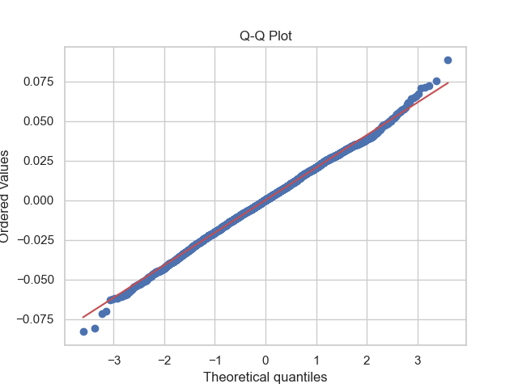

Applied a multiple linear regression model to predict vehicle prices based on various features. A multiple linear model is a regression analysis model that uses multiple independent variables (features) to predict a dependent variable (target). When predicting the price of a vehicle, a multiple linear model may be a suitable choice because the price can be influenced by various features. Vehicle price is not easily explained by a single feature alone; factors such as horsepower, mileage, age, size, and others can all impact the price. The multiple linear model takes into account these diverse features to predict the dependent variable. Additionally, the model can consider how each feature individually affects the dependent variable and whether there are interactions among these features. For example, the impact of horsepower and age on vehicle price may differ individually, but considering them together allows for more accurate predictions. For these reasons, in this regression step, predicted vehicle prices using a multiple linear model.
To assess the performance of the multiple linear regression model created in this step, three evaluation metrics—Mean Squared Error (MSE), Mean Absolute Error (MAE), and R-squared—were computed. The results are presented in the table below.
| Mean Squared Error (MSE)/th> | Mean Absolute Error (MAE) | R-squared |
|---|---|---|
| 0.0004207998102563289 | 0.016267015256890796 | 0.6531539164360696 |
The Mean Squared Error (MSE) of 0.0004207998102563289 indicates that, on average, the squared differences between predicted and actual prices are very close to zero. A low MSE suggests that the model accurately fits the observed data, reflecting minimal overall prediction errors. MSE measures the average squared deviation of predictions from actual values, serving as an indicator of the model's precision. The Mean Absolute Error (MAE) value of 0.016267015256890796 signifies that, on average, the absolute differences between predicted and actual prices are around 0.016. MAE represents the mean absolute deviation of predictions from actual values, providing a measure of the model's accuracy. The R-squared value of 0.6531539164360696 indicates that the model can explain approximately 65.32% of the variability in used car prices. R-squared measures the proportion of the dependent variable's total variance explained by the model, serving as an indicator of the model's explanatory power.
These results demonstrate that the low MSE and MAE values indicate the model generally operates well, providing reliable predictions while minimizing errors. Additionally, the R-squared value suggests that the model explains a substantial portion of the variability in used car prices but hints at potential for improvement, implying the presence of unaccounted factors or additional features that could enhance the model's performance. In summary, the model exhibits effective predictive capabilities, yet there is potential for improvement through the inclusion of additional features or further model tuning.
The evaluation of how well the model describes and predicts the data, along with additional checks to assess the model's appropriateness and stability, was performed. The mean of the residuals in this model is close to zero, with a value of 3.728875939562249e-05, indicating that the model is making predictions on average accurately without significant underestimation or overestimation.
Next, the standard deviation of the residuals is 0.020515688448871486. A small standard deviation signifies that the model is effectively describing the data, suggesting that the predicted values are closely clustered around the actual values.
A Q-Q Plot is employed to visually assess the normality of the residuals. The Q-Q Plot for this model is presented below.
The Q-Q Plot helps to examine how rapidly the tails of the residuals increase and the extent to which points deviate from the diagonal. The dense clustering of points along the diagonal in the plot indicates that the residuals are close to a normal distribution. This positive feature in the Q-Q Plot suggests that the residuals closely approximate a normal distribution.
To evaluate the model's prediction performance and assess its fit to the data distribution, a regression line is visualized by reviewing the relationship between actual prices and model-predicted values. The following plot illustrates the relationship between Actual Prices and Predicted Prices through a scatter plot and displays the Regression Line.
Observing the plot, the dense clustering of data points around the elliptical distribution and the regression line indicates that the model has successfully explained and predicted the data to a certain extent. However, the existence of other patterns or unusual data points not explained by the model suggests the potential need for further analysis.
Finally, analyzing the coefficients for this model is as follows.
Intercept (2.300):The intercept represents the predicted log-transformed price when all independent variables are zero. However, for practical interpretation, setting all variables to zero may not make sense in this context.
Horsepower (0.0243):An increase in horsepower is associated with an increase in the predicted log-transformed price. This suggests that more powerful cars tend to have higher prices.
Mileage (-0.0190):An increase in mileage is associated with a decrease in the predicted log-transformed price. This aligns with the common expectation that cars with higher mileage are generally priced lower.
Highway Fuel Economy (-0.0056):Higher highway fuel economy is associated with a decrease in the predicted log-transformed price. More fuel-efficient cars may be priced lower.
Year (0.0109):An increase in the production year is associated with an increase in the predicted log-transformed price. This indicates that newer cars tend to have higher prices.
Wheelbase (-0.0004):The coefficient for wheelbase is very small, suggesting that the effect of wheelbase on the log-transformed price is negligible.
Based on the above coefficients and Intercept, the linear regression equation, considering the log-transformed dependent variable, can be expressed as follows:
Now, Here is a simple example of this equation. Suppose you have a new set of data with the following normalized input values:
Normalized Horsepower: 0.8, Normalized Mileage: -0.5, Normalized Highway Fuel Economy: 0.2, Normalized Year: 1.5, Normalized Wheelbase: −0.1
To predict the log-transformed price for this new data, you substitute these normalized values into the equation:

In summary, the multiple linear regression model effectively predicts vehicle prices based on diverse characteristics, showcasing low Mean Squared Error (MSE) and Mean Absolute Error (MAE) values, indicating accurate and reliable predictions. The model explains approximately 65.32% of the variability in used car prices, reflecting strong explanatory power. Residual analysis confirms accurate predictions, with residuals close to zero and a small standard deviation, demonstrating the model's stability. The Q-Q Plot further supports the model's reliability by indicating residuals closely approximate a normal distribution. While the model successfully explains and predicts data, the existence of unexplained patterns suggests potential for further improvement through additional features or model refinement.